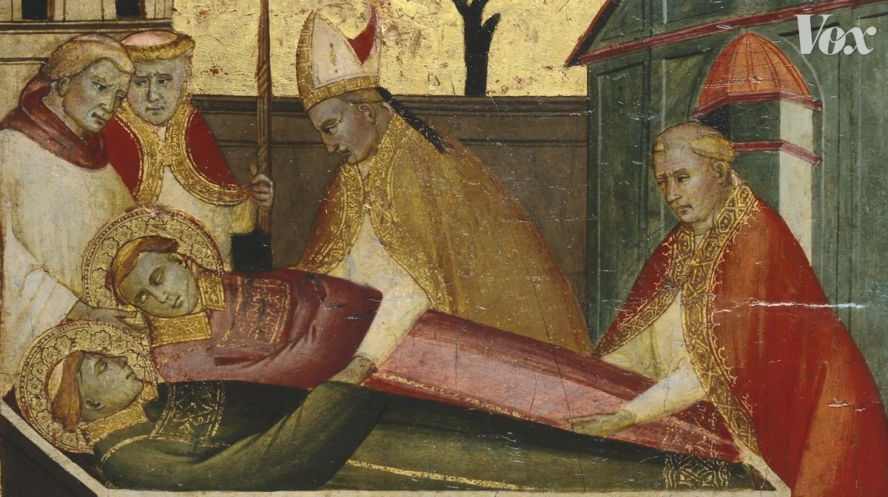
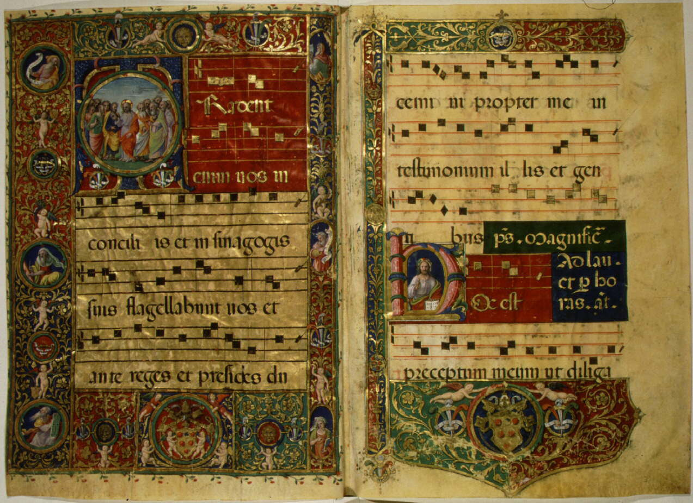
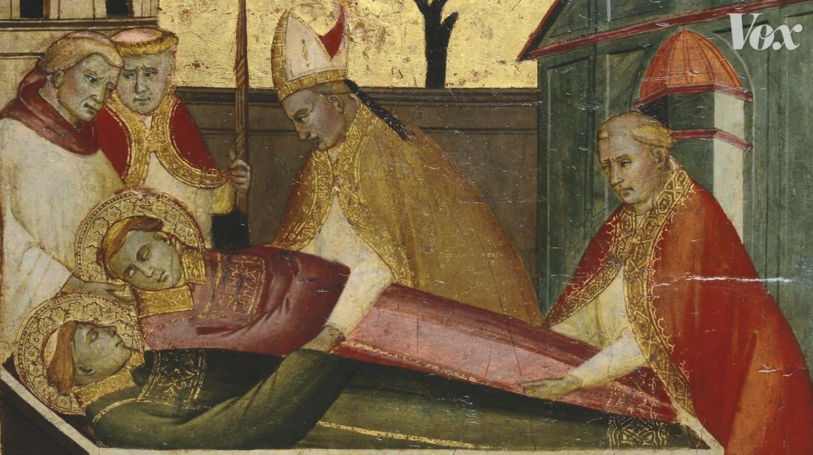
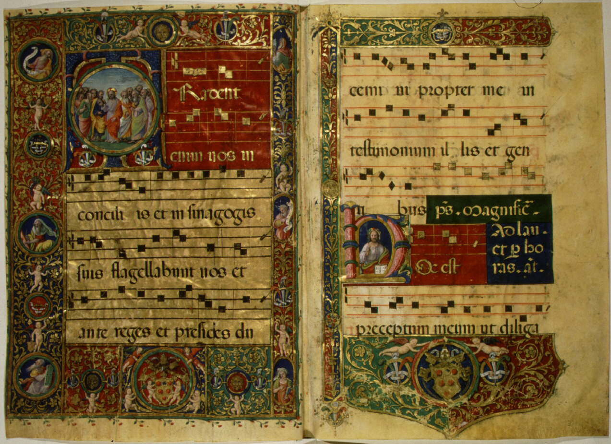

Early Roots
The early roots of the Dies Irae trace back to the medieval Christian worldview, which was deeply concerned with death, judgment, and the fate of the soul. Composed in the 13th century, the Dies Irae ("Day of Wrath") is a Latin hymn describing the Last Judgment, when souls are called before God for eternal reward or punishment. While its exact authorship is debated, often attributed to Thomas of Celano, a Franciscan friar, the hymn reflects the rising influence of apocalyptic imagery in religious thought and art of the time. It likely drew inspiration from earlier biblical texts, particularly the Old Testament prophets and the Book of Revelation, as well as earlier liturgical chants and sequences that meditated on death and divine justice. Musically, the Dies Irae stands out for its stark, syllabic melody and dramatic, almost chant-like rhythm, which made it ideal for public worship and mass participation during Requiem Masses (Masses for the dead). Its use of the Dorian mode gives it a somber and urgent tone, aligning with the gravity of the text. Unlike many earlier Gregorian chants that focused on praise or contemplation, the Dies Irae was intense and evocative, designed to instill both fear and piety. Over time, its powerful impact ensured its place not only in the liturgy but also in the imagination of later composers, who would quote or reinterpret it in countless classical and cinematic works, making it one of the most enduring musical symbols of mortality and judgment.
 



Modern Influence
The Dies Irae has had a profound and lasting influence on modern music theory and composition, serving as one of the most recognizable musical motifs associated with death, judgment, and the macabre. Its distinctive four-note opening, typically rendered as a descending pattern, has been quoted or referenced by countless composers across centuries, from the Romantic era to contemporary film scores. Composers like Hector Berlioz, Franz Liszt, and Sergei Rachmaninoff famously wove the Dies Irae theme into their orchestral works to evoke doom or the supernatural. In these compositions, the chant often functions as a leitmotif, a symbolic musical idea representing death or fate, bridging medieval liturgical tradition with modern narrative expression. In music theory, the Dies Irae has also become a case study in how thematic material can carry deep associative meaning across time and context. Its modal structure, often rooted in the Dorian or Aeolian modes, provides an alternative to traditional major-minor tonality, offering composers a way to evoke a sense of antiquity or spiritual gravity. In film scores, the theme appears in works by composers like John Williams, Danny Elfman, and Hans Zimmer, subtly underscoring scenes of tragedy, villainy, or apocalyptic tension. Its endurance in modern media not only highlights the emotional power of medieval chant but also illustrates how a single melodic fragment can transcend its origins to become a universal symbol of mortality and existential reckoning in the musical language of today.